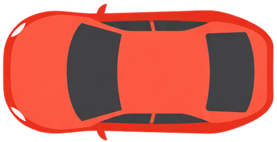
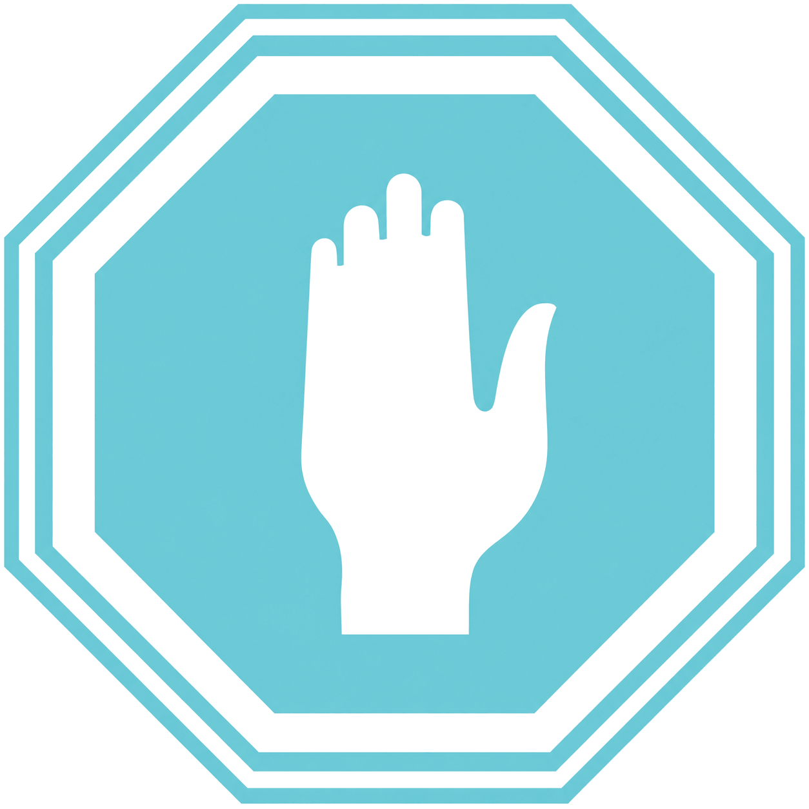
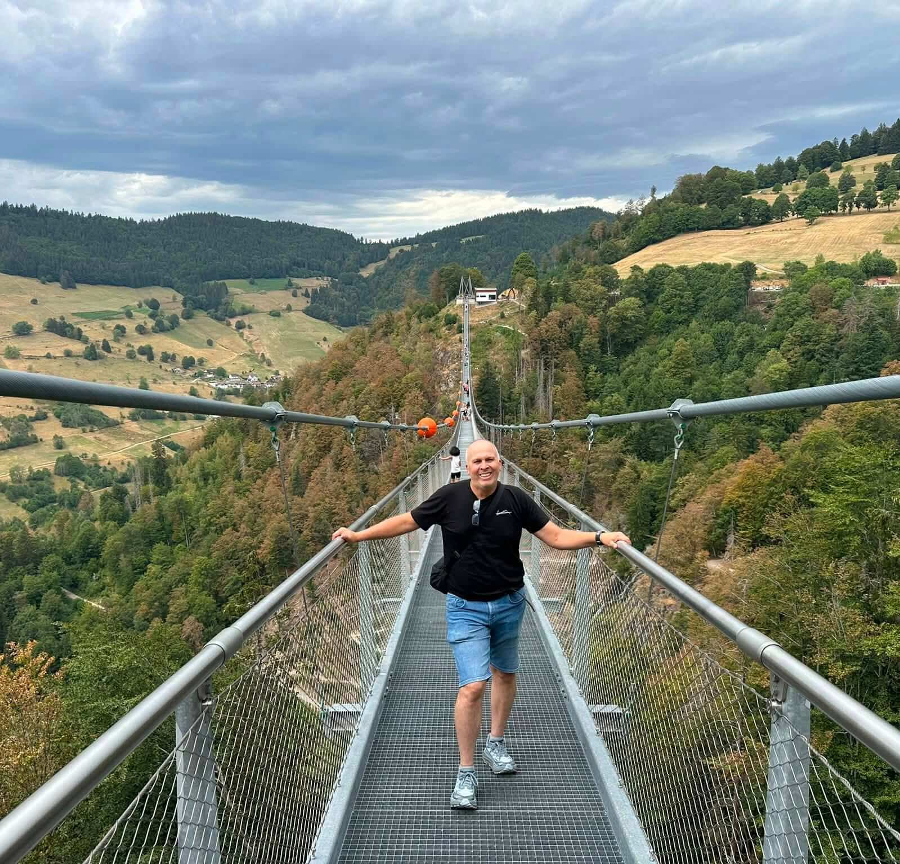
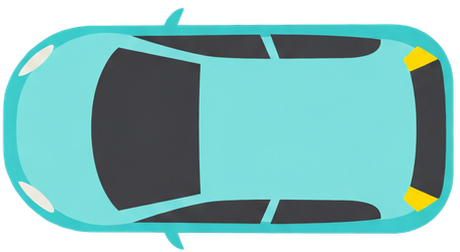
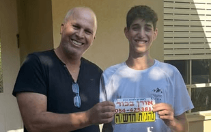
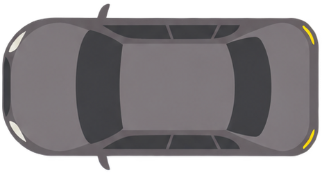
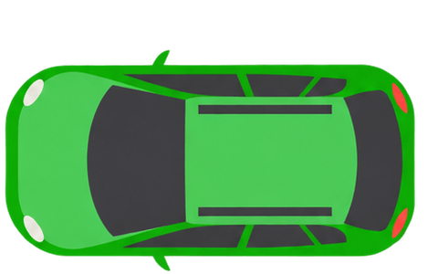
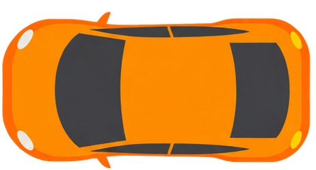
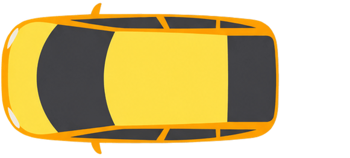
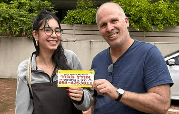

להבין את הכביש. לקבל החלטה נכונה בזמן.
קורס דיגיטלי לתלמידי נהיגה שמחבר בין חוקי הדרך למצבים אמיתיים, עם הסברים וסרטונים מאורן בכור.

אורן בכור מורה לנהיגה ומנחה הקורס

אורן הוא מורה נהיגה מוסמך עם ניסיון של למעלה משמונה שנים. בקורס הוא מחבר בין חוקי הדרך למצבים שפוגשים מאחורי ההגה, בעזרת הסברים וסרטונים שיעזרו לכם להבין מה קורה בכביש ואיך לפעול בבטחה. אפשר לחזור לכל נושא בקצב שלכם, גם כהכנה לשיעור הנהיגה הבא.
-


-

-


-


-

-


לומדים להבין את הכביש, צעד אחר צעד
בקורס מחברים בין חוקי הדרך למצבי נהיגה אמיתיים באמצעות הסברים, דוגמאות וסרטונים. בכל נושא מבינים מה רואים בדרך ואיזו החלטה צריך לקבל.
- רואים מצב אמיתי מהכביש
- מבינים איזה חוק חל
- לומדים מהי הפעולה הבטוחה
נושאי הקורס
זכויות קדימה ופניות
לקרוא את מבנה הצומת, להבין את מדרג הציות ולדעת מתי ולאן אפשר לפנות בבטחה.
זיהוי כבישים ונתיבים
לזהות כביש חד־סטרי או דו־סטרי, לבחור נתיב נכון ולהבין לאן כל נתיב מוביל ומתי זה הזמן הנכון לשנות אותו.
מעגלי תנועה וצמתים
להתקרב נכון למעגל תנועה ולצומת, לסרוק את התנועה ולבחור את התזמון המתאים לכניסה.
תמרורים ומהירויות
להכיר תמרורים נפוצים, להבין מתי תמרור גובר על ברירת המחדל ולבחור מהירות שמתאימה לדרך.
עקיפה ואיסורי עקיפה
להבין מתי עקיפה אפשרית, לזהות איסורים ולבדוק אם מרחק הראייה ותנאי הדרך מאפשרים אותה.
תכנון נסיעה
להביט רחוק, לזהות סיכונים מוקדם ולתכנן נתיב ומהירות לפני שמגיעים לנקודת ההחלטה.
טעויות נפוצות בטסט
להכיר את המצבים שבהם תלמידים נכשלים ולתרגל הסתכלות, מיקום וקבלת החלטות לפני המבחן.
ההסבר המלא מלווה בדוגמאות ובסרטונים ממצבי נהיגה אמיתיים.
הקורס משלים את התרגול בשיעורי הנהיגה ואינו מחליף את מורה הנהיגה.
מוכנים להבין את הכביש טוב יותר?
התחילו ללמוד בקצב שלכם וחזרו לכל נושא לפני שיעור הנהיגה הבא.
התחילו בשיעור הראשון